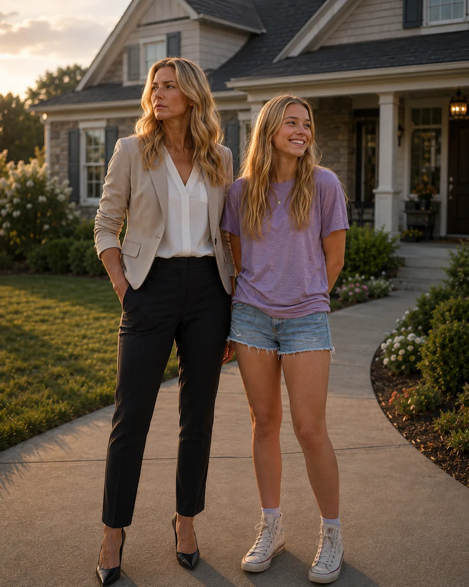
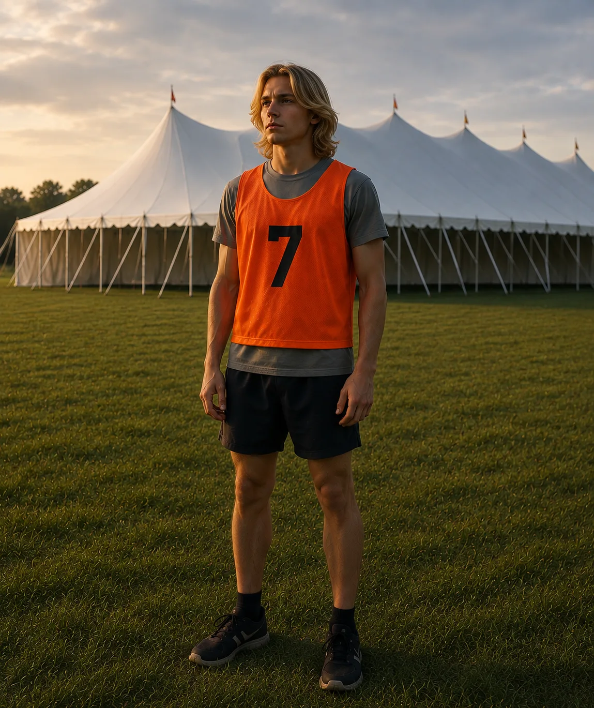
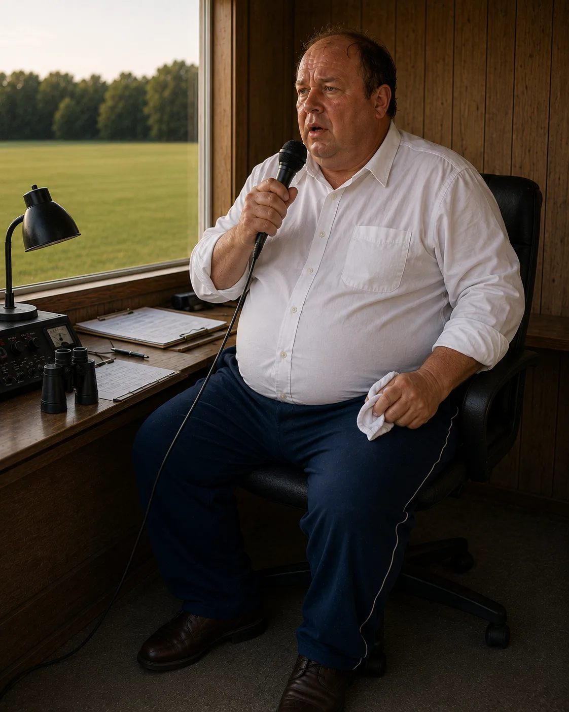
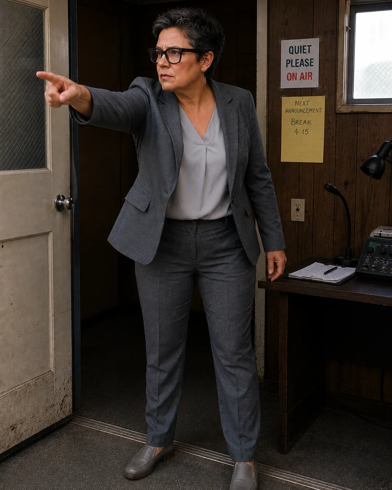

50 Boys
enter the track each year
1 Survivor
is promised Community-B
120 Years
of tradition built upon a lie
Every year in Community-A, fifty boys enter the track.
One survives.
The winner goes to Community-B, a paradise beyond the mountains.
That is what everyone believes. That is what the community has been
told for one hundred and twenty years.
It is a lie.
When fifteen-year-old Heather attends her first Contest, she expects
a race. What she finds is something far more brutal and far more human
than anything she was prepared for.
Among the boys fighting to survive is Locks, a quiet and defiant
fifteen-year-old who dared to ask the Leader to end the Contest before
it began. As the days pass and the boys fall one by one, their
connection across the fence becomes the emotional center of a story
building toward an explosion.
Because Deidre, the Leader of Community-A, is keeping secrets.
About the winners. About Community-B. About a blind boy named Michael
who died twenty-five years ago and whose photograph she still hides
behind a painting on her wall.
And about the embryo bank that has sustained her community for over a
century, which is failing, and which is about to force a choice that
can no longer be postponed.
When the truth finally reaches the track, survival may no longer be
the only thing worth fighting for.
Those Who Question the Tradition
Meet the Characters
One girl begins to see the Contest differently. One boy dares to
challenge it. And one leader carries the truth of what came before.

Mother and Daughter
Deidre and Heather Armand
Deidre is the Leader of Community-A, responsible for preserving
its order, traditions, and future. She has spent decades
protecting secrets she believes the community cannot survive
without.
Heather is fifteen and attending her first Contest. Curious,
compassionate, and unwilling to ignore what she sees, she begins
questioning the story Community-A has repeated for generations.

Contestant No. 7
Locks
Quiet, defiant, and unwilling to accept the Contest without
question, Locks asks Deidre to stop it before it begins.
His courage brings him unwanted attention and creates an
unexpected connection with Heather across the fence.

Voice of the Contest
Mr. Wright
Seated inside the viewing booth with microphone in hand,
Mr. Wright calls every stage of the Contest. His familiar
voice turns suffering into ceremony and makes the tradition
sound as ordinary as any community celebration.

Contest Official
June
Organized, forceful, and committed to order, June helps
oversee the Contest and expects instructions to be followed
without debate. She represents the strict discipline that
keeps Community-A functioning.